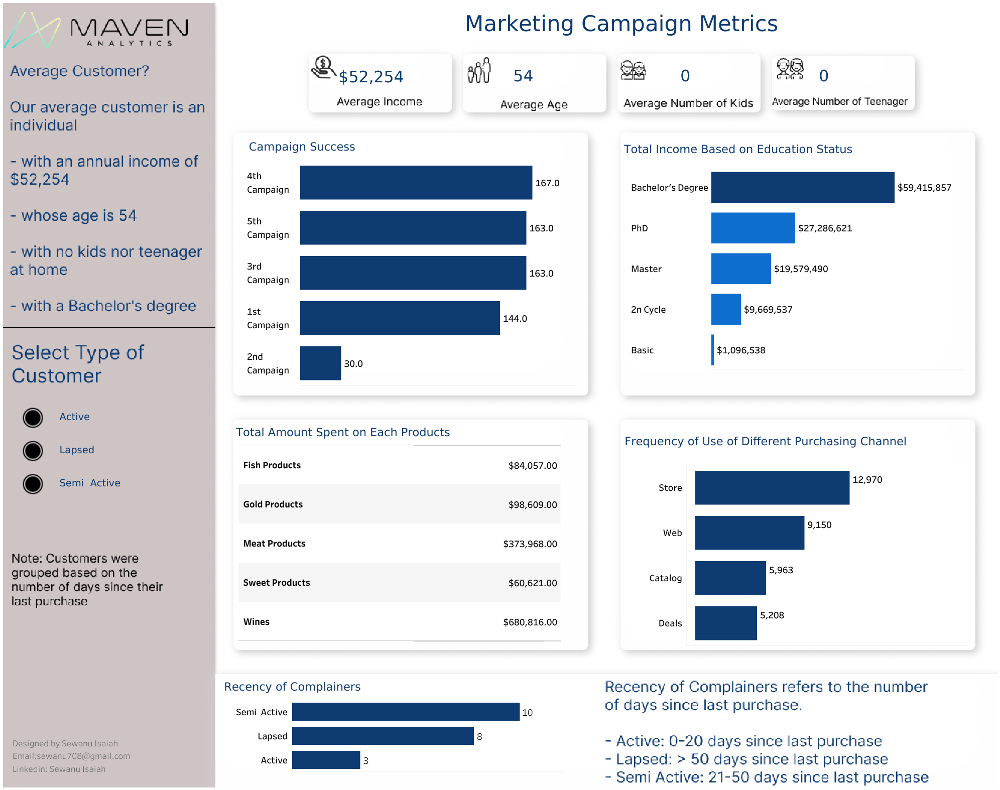
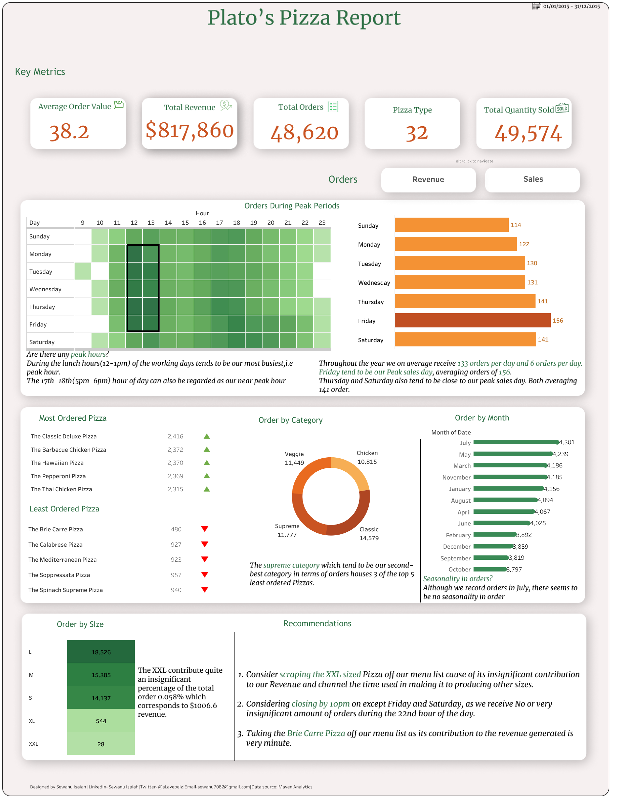

In this descriptive analysis,I explored a fictional house listing dataset using Ms. Excel to gain insights into various aspects of the properties and their availability. The dataset provided information about different types of accommodations, including hotel rooms, in various neighborhood groups.
A food company in India provides meal delivery services to numerous customers across 51 cities in eight regions. To improve customer satisfaction, they deliver meals from 77 fulfillment centers. They want to understand their customer base, meal preferences, and demand fluctuations, seeking help to optimize operations and reduce food waste.

A business manager of a consumer credit card portfolio is facing the problem of customer churn. They want to analyze the data to find out the reason behind this and leverage the same to predict customers who are likely to drop off.

Performed data visualization on the marketing campaign data of Maven Marketing, focusing on 2,240 customers. The visualization covers various aspects such as customer profiles, product preferences, campaign successes and failures, as well as channel performance. This visualization provide a clear and concise overview of the marketing campaign data, enabling better understanding and insights for Maven Marketing's future strategies.

Created a visualization using Tableau, incorporating a year's worth of sales data from a fictitious pizza place. The dashboard showcases essential details, including the date and time of each order, as well as the specific pizzas served. Additional information on the type, size, quantity, price, and ingredients of the pizzas is also provided.
The COVID-19 pandemic in Nigeria is part of the worldwide pandemic of coronavirus disease 2019 caused by severe acute respiratory syndrome coronavirus 2. This project entails cleaning a covid-19 dataset (which contains some French terms) using sql. The relational database management software used in this project is SQL Server Management Studio.